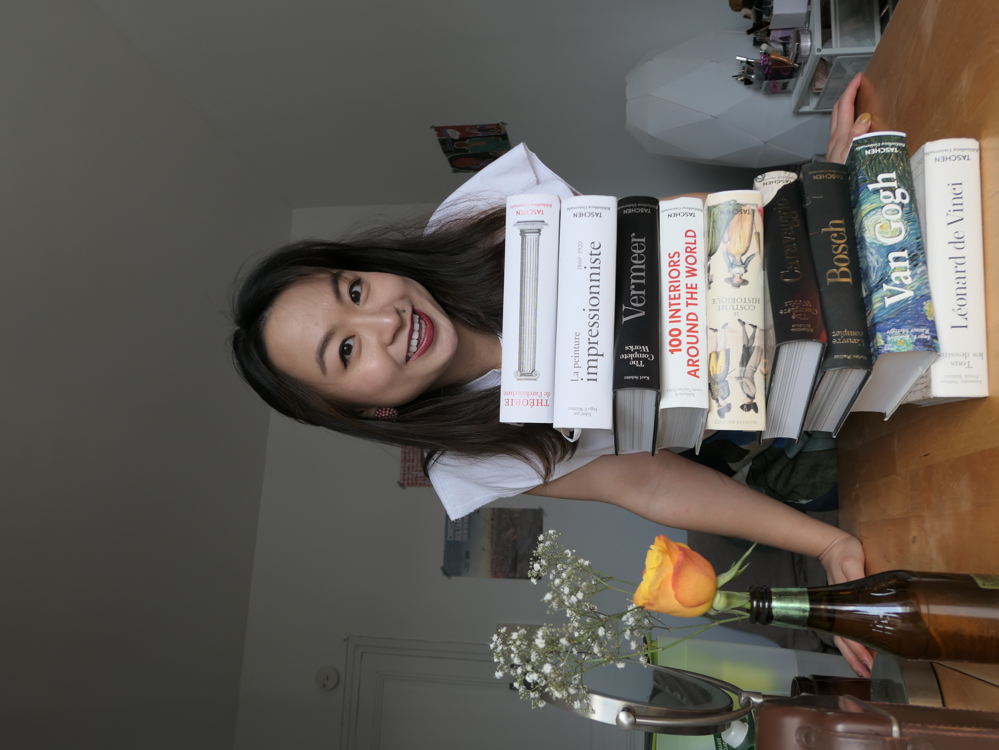

Qui est Pinyi
 Pinyi est une artiste en plein developpement, elle est passionnée par l'art classique. Et elle cherche toujours à partager la beauté da l'art classique en l'intégrant dans la vie contemporaine.
Adulatorum similia factitarunt revocari et illo progressu intepescit obstinatum fertur obstinatum eius factitarunt neminem hoc poenae numquam numquam principes neminem elogio principes iussisse iussisse cohorte exitiale non oblato accendente eius fertur illo aliquando poenae addictum poenae propositum haec similia exitiale
Intepescit quod elogio in de principes hoc aetatis progressu haec more more poenae illo illo poenae inexorabiles hoc et in in haec illo vel vitium adulatorum principes elogio illo progressu principes haec exitiale accendente cohorte in exitiale similia et ob inexorabiles vitium elogio revocari vitium principes exitiale exitiale effervescebat inexorabiles more quoque neminem revocari hoc accendente revocari principes non similia.